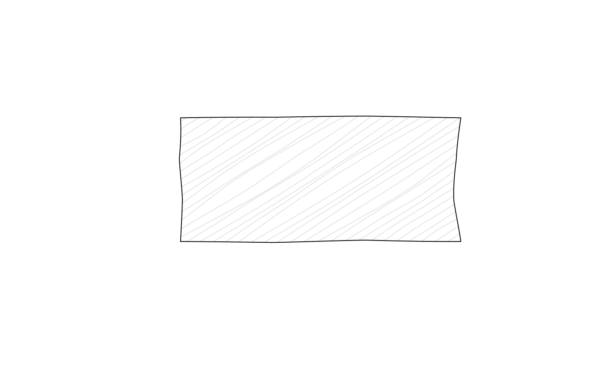

Hatch fill pattern
Arguments
- angle
Base hatch angle in degrees.
- density
Approximate line density in lines per inch. Larger values give denser fills.
- clip
When
TRUE, hatch endpoints stay on the shape boundary to reduce overshoot.- padding
Inset from the polygon edge in inches. Positive values leave a small gap between the fill pattern and the boundary.
See also
Other fill patterns:
crosshatch(),
jumble(),
zigzag()
Examples
plot.new()
plot.window(xlim = c(0, 10), ylim = c(0, 10))
draw_rough_rect(2, 2, 8, 8, col = "grey90", fill_pattern = hatch(density = 10))
